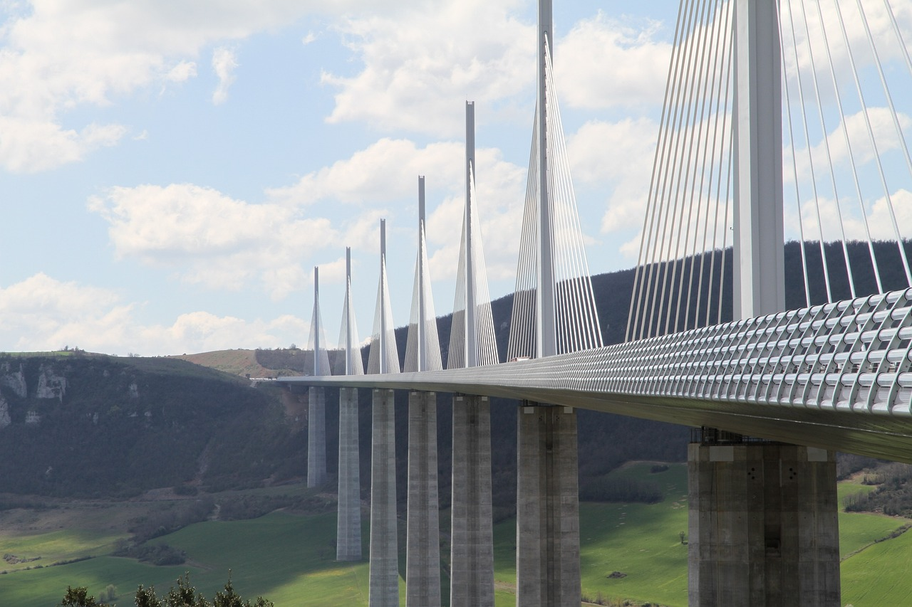
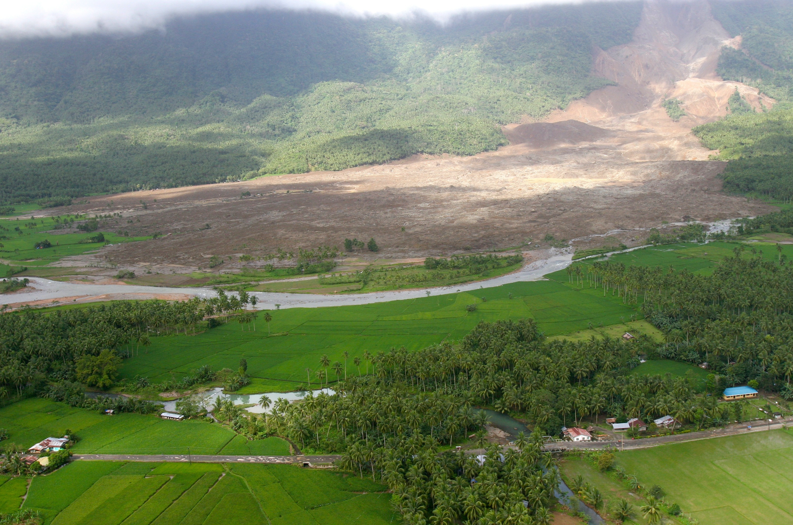
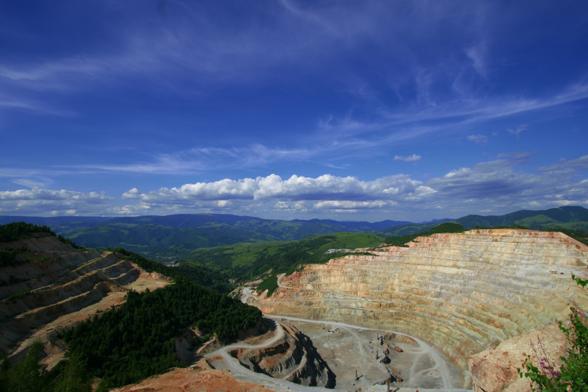

Caliper is the first-to-market end-to-end solution purpose-built for surveyors, teams, and management., the first surveying solution which integrates the processing of all Caliper's platform-native least-squares adjustment algorithms allow for full automation of mathematical calculations while acheiving the highst available scientific standards of quality control scalably. Condect geodetic surveying for the first time with one set of algorithms, on one platform, on any OEM hardware.
This makes Caliper:
- Cheaper—No more third party purchases.
- Faster to deploy—No more third party integrations.
- Safer—No more third party risk vectors.
- Productive—Cloud solutions eliminate manual data retrieval, and more
Use Cases
New Construction

Bridges, dams, tunnels, buildings.
Structural Health
On-going monitoring of historical buildings, bridges, dams, tunnels, and natural phenomena such as volacnoes.
Campaign-based monitoring
Damanged structures and seasonal phenomena, such as mudslides.
Mining
Image by horjaraul from Pixabay
Open pit mines and other hazardous mining projects in Australia, Africa, and South America.